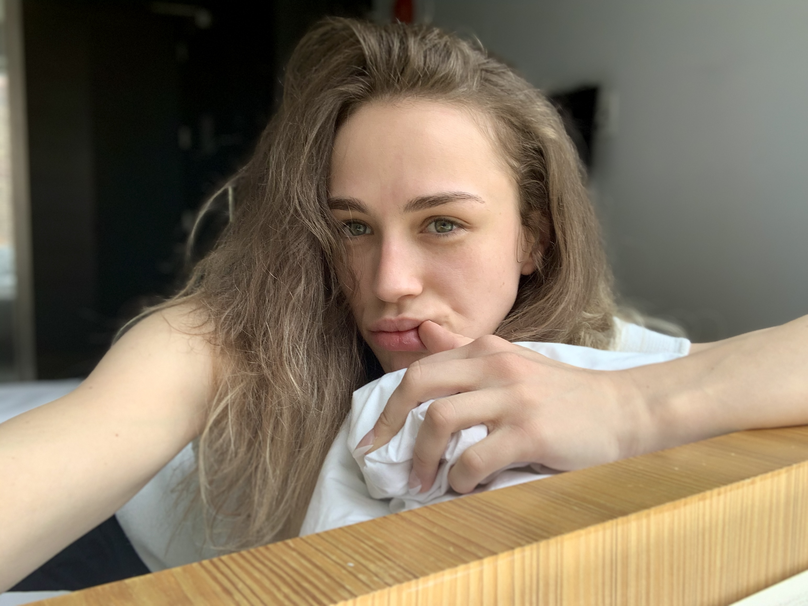

Cece Duval

Summary
I am a divine goddess with an appreciation for the abstract nature of art. I've been following a path others laid out for me and am transitioning into a life I want for myself.
Education
- Professional Maritime Certification - Orange Coast College of Sailing and Seamanship (2017 - 2018)
Work Experience
Skills
- Seeing through people's BS: ⭐⭐⭐⭐⭐
- Disassociation: ⭐⭐⭐⭐⭐
- Not taking anything seriously: ⭐⭐⭐⭐⭐
Awards and Certifications
- Top Female Laser Sailor - 2016 Cleveland Race Week
- 1st Place - WPSA Invitational Regatta
- US Sailing
- Level 1
- Level 2
- Level 3 (Head Instructor)
- STEM Reach Educator (Middle School Level)
- US Powerboating
- Safety Boat and Rescue
- Basic Powerboating
- Vector Training Solutions
- FAPE
- HIPPA
- Bullying
- Students Experiencing Homelessness
- IEP Compliance
- USCG STCW
- I WANT TO DIE
- Basic Firefighting
Other
My Hobbies
Contact Me